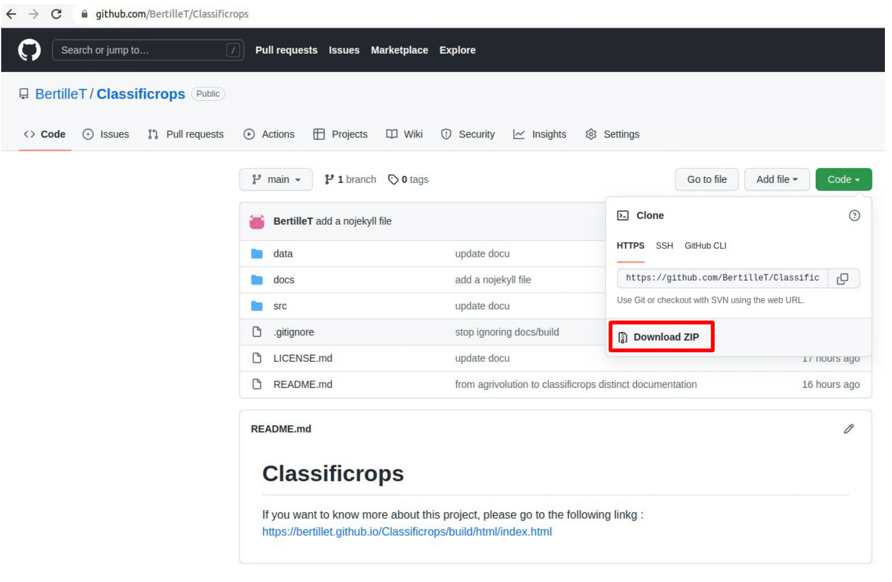

1. User guide¶
1.1. Description¶
Classificrops is a tool able to convert one crops classification from an european country/region to the Indicative Crop Classification made by the FAO. To match 2 classes, the tool uses a function that compute similarity between 2 words based on the letters they contains. It is not semantic based. Thus, this tool is limited when it comes to match strings that need semantic interpretation. As a consequence, this tool is not able to automate fully the conversion from a classification to the ICC one, but at least to semi-automate it. To sum up, Classificrops must be viewed as a helping tool to pre-work the conversion and save the user time by making the easy and basic matching.
{kind=link}
1.2. How to use it : the workflow¶
1.3. Step by step¶
1.3.1. Prepare the data¶
- The source classification table should stick to the the following expectations :
format : csv
table name : place+’_’+year+’.csv’ –> example : FR_2020.csv
column name : class+’_’+language or ‘ID_’+class+’_’+language –> example : GROUP_fr, CROPS_fr or ID_GROUP_fr, ID_CROPS_fr
column name should be written in english (this will be updated soon)
Once the third step done (download classificrops code available on Github), the source classification well formatted should be put into the folder data/country. For example, if you are working with a crops classification of Wallonia, you can put it into data/WL.
1.3.2. Install¶
From your terminal :
pip install python3
pip install numpy
pip install pandas
1.3.3. Download¶

From your terminal :
git clone https://github.com/BertilleT/ClassificropsOr from your browser :
{kind=link}
1.3.4. Go to¶
From your terminal :
cd src/scripts/classificrops/Or : from your graphic interface.
1.3.5. Choose your inputs¶
name input |
format |
domain |
|---|---|---|
path |
‘data/’ + place + ‘/’ + tablename |
|
place |
2 capitalized letters |
[WL,CT,FR,IT] |
language |
2 lowercase letters |
[en,fr,it,…] |
threshold |
a number |
[0,100] |
sim_method |
a string |
[‘basic’,’split+ratio’,’token_set_ratio’] |
1.3.6. Run¶
python3 converter.py -c path language place threshold sim_method
If you want to test different hreshold between 0 and 100 for a same similarity measure, please run :
python3 converter.py -t path language place sim_method
1.4. Main issues¶
How to go from a classification written in one language to the ICC classification written in english ? Translation
Which shared classification should we choose ?
How to compute similarity between 2 strings ?